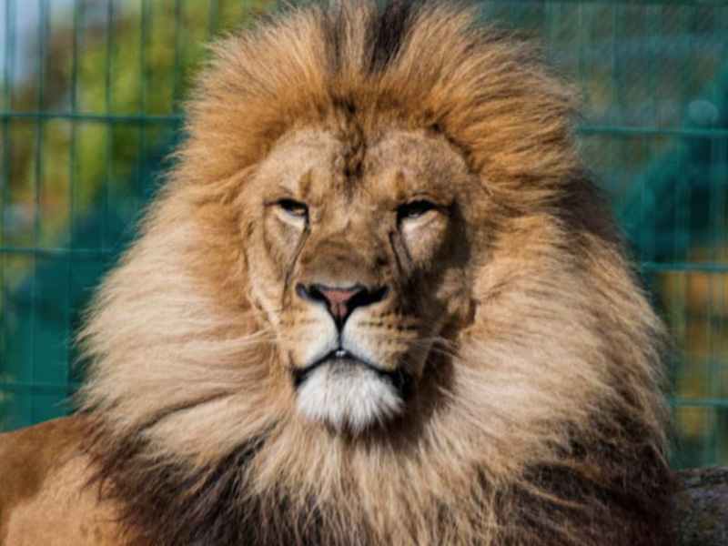
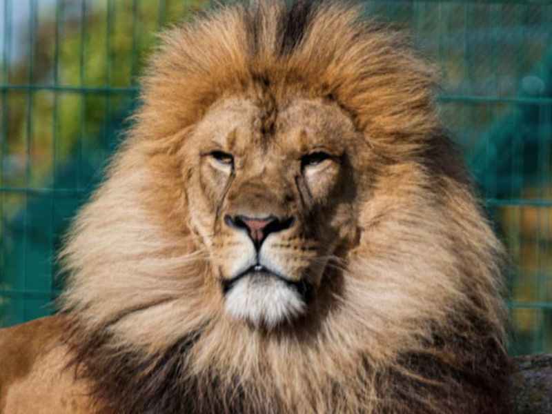

Engineering Notebook
This is my lasagna recipe
 

This was my first blog
today's date is 9/1/2022 this week we started working on rube golder


today is 9/16/2022 and that we did this week was make a paper Boat and we also started on our challeng of bulding a goldbred mechin and so fair everything is going good that is all we did this week
PDF
today is 10/7/2022 and this week we disassemble the computer and it was really fun. Also, we had to make a worksheet of all of the parts in the computer then we had to color it in and name every part thats all we did this week.

Today is 10/14/2022 This week we learned about rockets and me and my group we learned about rockets and bomb. We had to design a tinkercad of our bottle rocket because that is our project for Aerospace Engineering. Next week we are going to design the Rocket and we are going to build/test it.
 Today is 10/24/2022 This week we built a rocket an learned everything about how it launches. Our rocket had a coke bottle shell and covered with wings and a pointy tip. After the experiment it went really bad, and it didn't take off as we imagined it. Instead of taking off it went down to the floor and splashed water all over the place.
Today is 10/24/2022 This week we built a rocket an learned everything about how it launches. Our rocket had a coke bottle shell and covered with wings and a pointy tip. After the experiment it went really bad, and it didn't take off as we imagined it. Instead of taking off it went down to the floor and splashed water all over the place.

 PDF
Today is 11/4/2022 This week we learned about breadboarding and we did it in tinkercad. We did 3 models, with different types of batteries. We learned how everythin works and net week were go to make a real life version off of our tinkercad. Also last week we learned how to filter dirty water by cutting a waterbottle in half and putting sand, cotton, gravel to filter dirty water. Our group did good and it was really clear water.
Today is 11/10 this week we learned about how to create a circuit, Last week and this week we did tinkercads for our circuit and we finished our circuit. Mr.Poole gave us a worksheet and we finished our circuit and worksheet. We made a real life version of our tinkercads. Last week we learned electric engineering and how to create a circuit. For challenge day this week we had to count weather we would take a Math Class or count to 1 Million, me and my partner choose the Math Class, and I think we explained it good.
PDF
Today is 11/4/2022 This week we learned about breadboarding and we did it in tinkercad. We did 3 models, with different types of batteries. We learned how everythin works and net week were go to make a real life version off of our tinkercad. Also last week we learned how to filter dirty water by cutting a waterbottle in half and putting sand, cotton, gravel to filter dirty water. Our group did good and it was really clear water.
Today is 11/10 this week we learned about how to create a circuit, Last week and this week we did tinkercads for our circuit and we finished our circuit. Mr.Poole gave us a worksheet and we finished our circuit and worksheet. We made a real life version of our tinkercads. Last week we learned electric engineering and how to create a circuit. For challenge day this week we had to count weather we would take a Math Class or count to 1 Million, me and my partner choose the Math Class, and I think we explained it good.


Today is 12/02 this week we learned about Civil Engineering, and I was pretty interested in this topic. We learned how to build a brigade, and I'm sure our bridge will do really good. For challenge week we didn't do anything, all we did was continue on our spaghetti bridge project. I'm confident that we'll carry 15 pounds or more on our brigde. This week was chill and I like it.
Today is 1/13/23 This week was the week after christmas break. My christmas break was pretty fun, the week we came back we started to learn about shark tank and how to propose buisnesses and ideas to other people. Next week hopefully we will be done with out project and propose our shark tank deal.
Today is 1/20/23 This week we dSid our shark tank product and our product was scrubuddy and itś used to help mechanic shop workers with their dirty hands. In our proposal, we decided to do 700k for 10% of our company and no-one bought it but at the end of the day it was really fun doing it.
Today is 1/27/23 This week we learned about oobleck and it took us couple of attempts to get the right consistency but we got it. We played around with it and we saw how it worked, it was a lot of fun doing it but it was also a challenge not getting it on our clothes.
 Today is 2/3/23 This week I did the tinkercad for my mouse trap car and it was not hard put not that easy it took me 4 days to do it and while i was going it i had to thing of what will work with my idea of a mouse trap car.
Today is 2/10/23 This week i worked on my project and I am almost done. I just need to put the wheels and the mouse trap. It turned out to be good after I tested everything out. Hopefully by the end of next week I will be done and start testing the week after.
Today is 2/3/23 This week I did the tinkercad for my mouse trap car and it was not hard put not that easy it took me 4 days to do it and while i was going it i had to thing of what will work with my idea of a mouse trap car.
Today is 2/10/23 This week i worked on my project and I am almost done. I just need to put the wheels and the mouse trap. It turned out to be good after I tested everything out. Hopefully by the end of next week I will be done and start testing the week after.